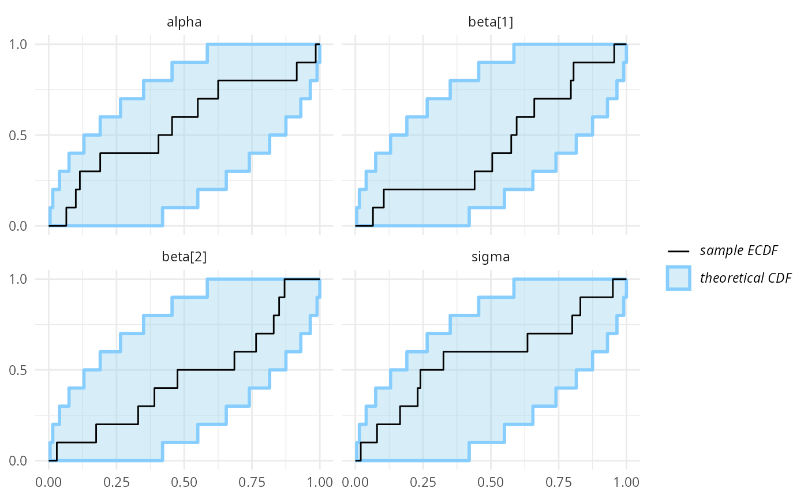
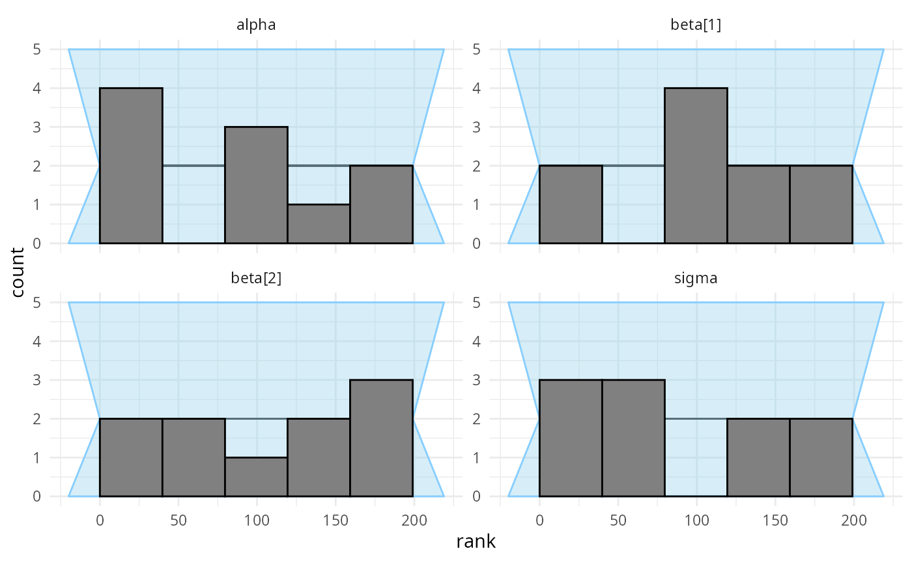
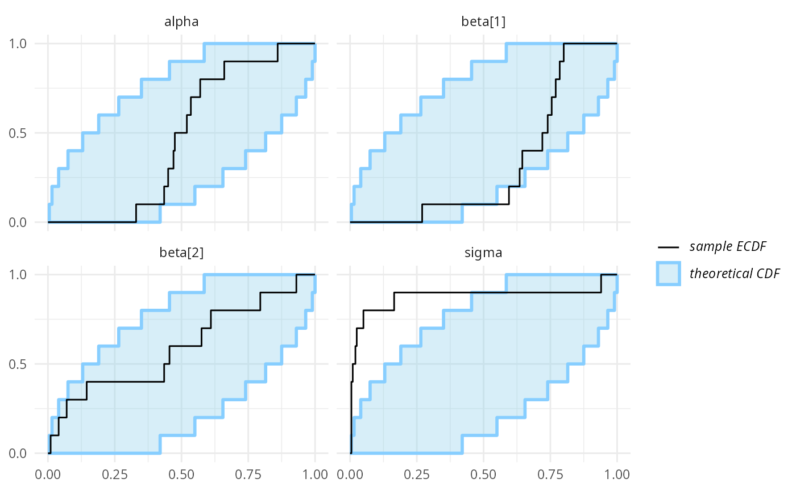
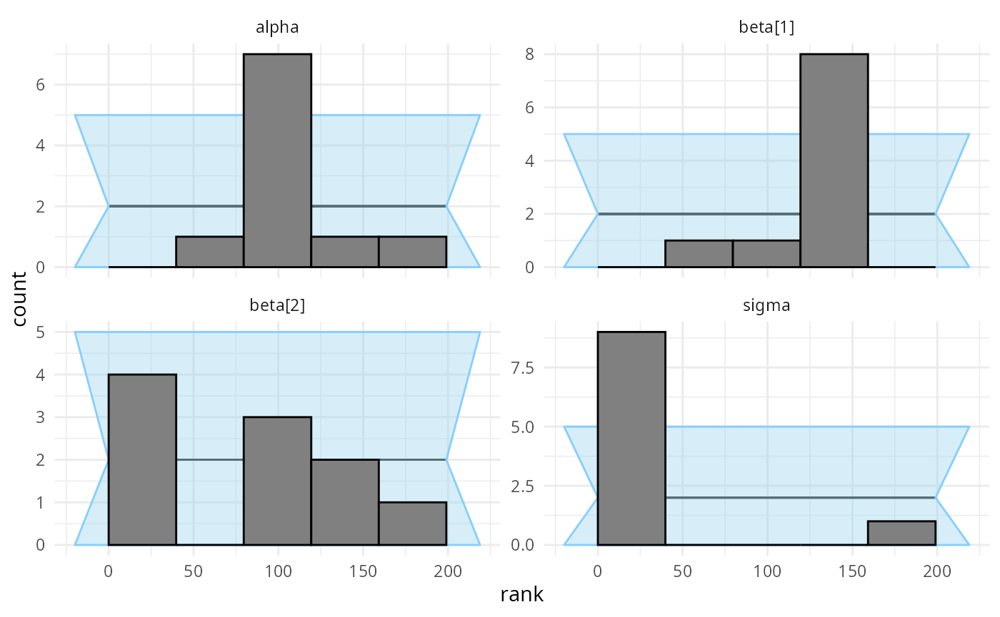
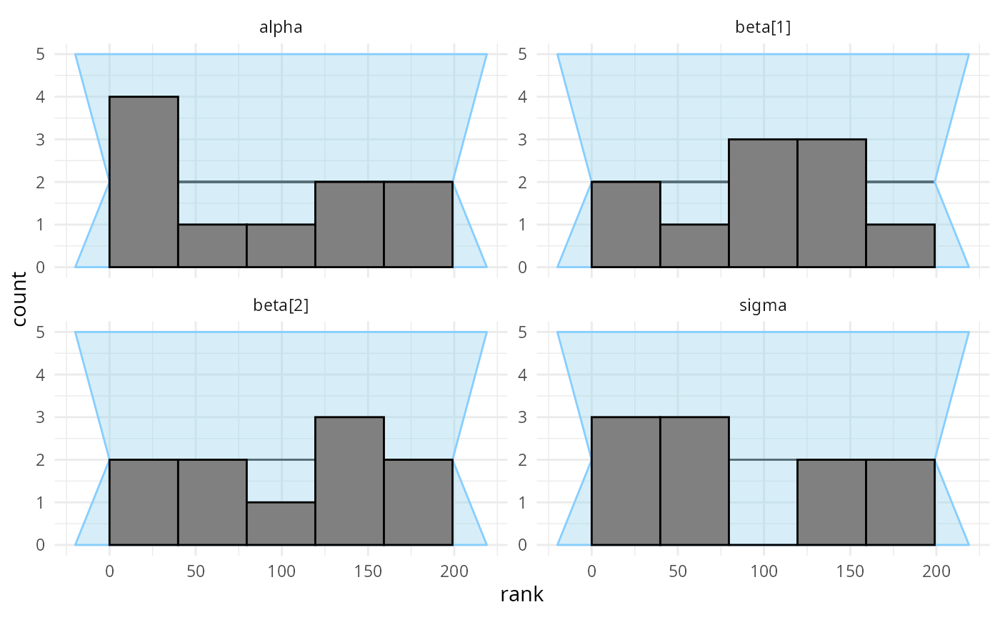

vignettes/indexing.Rmd
indexing.RmdThis vignette provides the example used as Exercise 3 of the SBC tutorial presented at SBC StanConnect. Feel free to head to the tutorial website to get an interactive version and solve the problems yourself.
Let’s setup the environment.
library(SBC);
library(ggplot2)
use_cmdstanr <- getOption("SBC.vignettes_cmdstanr", TRUE) # Set to false to use rstan instead
if(use_cmdstanr) {
library(cmdstanr)
} else {
library(rstan)
rstan_options(auto_write = TRUE)
}
# Setup caching of results
if(use_cmdstanr) {
cache_dir <- "./_indexing_SBC_cache"
} else {
cache_dir <- "./_indexing_rstan_SBC_cache"
}
if(!dir.exists(cache_dir)) {
dir.create(cache_dir)
}Below are three different Stan codes for implementing a simple linear regression. Not all of them are correct - can you see which are wrong?
data {
int<lower=0> N; // number of data items
int<lower=0> K; // number of predictors
matrix[N, K] x; // predictor matrix
vector[N] y; // outcome vector
}
parameters {
real alpha; // intercept
vector[K] beta; // coefficients for predictors
real<lower=0> sigma; // error scale
}
model {
vector[N] mu = rep_vector(alpha, N);
for(i in 1:K) {
for(j in 1:N) {
mu[j] += beta[i] * x[j, i];
}
}
y ~ normal(mu, sigma); // likelihood
alpha ~ normal(0, 5);
beta ~ normal(0, 1);
sigma ~ normal(0, 2);
}data {
int<lower=0> N; // number of data items
int<lower=0> K; // number of predictors
matrix[N, K] x; // predictor matrix
vector[N] y; // outcome vector
}
parameters {
real alpha; // intercept
vector[K] beta; // coefficients for predictors
real<lower=0> sigma; // error scale
}
model {
vector[N] mu;
for(i in 1:N) {
mu[i] = alpha;
for(j in 1:K) {
mu[i] += beta[j] * x[j, j];
}
}
y ~ normal(mu, sigma); // likelihood
alpha ~ normal(0, 5);
beta ~ normal(0, 1);
sigma ~ normal(0, 2);
}data {
int<lower=0> N; // number of data items
int<lower=0> K; // number of predictors
matrix[N, K] x; // predictor matrix
vector[N] y; // outcome vector
}
parameters {
real alpha; // intercept
vector[K] beta; // coefficients for predictors
real<lower=0> sigma; // error scale
}
model {
y ~ normal(transpose(beta) * transpose(x) + alpha, sigma); // likelihood
alpha ~ normal(0, 5);
beta ~ normal(0, 1);
sigma ~ normal(0, 2);
}If you can, good for you! If not, don’t worry, SBC can help you spot coding problems, so let’s simulate data and test all three models against simulated data.
First we’ll build backends using the individual models.
if(use_cmdstanr) {
model_regression_1 <- cmdstan_model("stan/regression1.stan")
model_regression_2 <- cmdstan_model("stan/regression2.stan")
model_regression_3 <- cmdstan_model("stan/regression3.stan")
backend_regression_1 <- SBC_backend_cmdstan_sample(model_regression_1, iter_warmup = 400, iter_sampling = 500)
backend_regression_2 <- SBC_backend_cmdstan_sample(model_regression_2, iter_warmup = 400, iter_sampling = 500)
backend_regression_3 <- SBC_backend_cmdstan_sample(model_regression_3, iter_warmup = 400, iter_sampling = 500)
} else {
model_regression_1 <- stan_model("stan/regression1.stan")
model_regression_2 <- stan_model("stan/regression2.stan")
model_regression_3 <- stan_model("stan/regression3.stan")
backend_regression_1 <- SBC_backend_rstan_sample(model_regression_1, iter = 900, warmup = 400)
backend_regression_2 <- SBC_backend_rstan_sample(model_regression_2, iter = 900, warmup = 400)
backend_regression_3 <- SBC_backend_rstan_sample(model_regression_3, iter = 900, warmup = 400)
}Then we’ll write a function that generates data. We write it in the most simple way to reduce the possibility that we make an error. We also don’t really need to worry about performance here.
single_sim_regression <- function(N, K) {
x <- matrix(rnorm(n = N * K, mean = 0, sd = 1), nrow = N, ncol = K)
alpha <- rnorm(n = 1, mean = 0, sd = 1)
beta <- rnorm(n = K, mean = 0, sd = 1)
sigma <- abs(rnorm(n = 1, mean = 0, sd = 2))
y <- array(NA_real_, N)
for(n in 1:N) {
mu <- alpha
for(k in 1:K) {
mu <- mu + x[n,k] * beta[k]
}
y[n] <- rnorm(n = 1, mean = mu, sd = sigma)
}
list(
variables = list(
alpha = alpha,
beta = beta,
sigma = sigma),
generated = list(
N = N, K = K,
x = x, y = y
)
)
}We’ll start with just 10 simulations to get a quick computation - this will still let us see big problems (but not subtle issues)
set.seed(5666024)
datasets_regression <- generate_datasets(
SBC_generator_function(single_sim_regression, N = 100, K = 2), 10)Now we can use all of the backends to fit the generated datasets.
results_regression_1 <- compute_SBC(datasets_regression, backend_regression_1,
cache_mode = "results",
cache_location = file.path(cache_dir, "regression1"))## Results loaded from cache file 'regression1'## - 7 (70%) fits had some steps rejected. Maximum number of rejections was 4.## Not all diagnostics are OK.
## You can learn more by inspecting $default_diagnostics, $backend_diagnostics
## and/or investigating $outputs/$messages/$warnings for detailed output from the backend.
results_regression_2 <- compute_SBC(datasets_regression, backend_regression_2,
cache_mode = "results",
cache_location = file.path(cache_dir, "regression2"))## Results loaded from cache file 'regression2'## - 1 (10%) fits had at least one Rhat > 1.01. Largest Rhat was 1.011.## - 6 (60%) fits had some steps rejected. Maximum number of rejections was 4.## Not all diagnostics are OK.
## You can learn more by inspecting $default_diagnostics, $backend_diagnostics
## and/or investigating $outputs/$messages/$warnings for detailed output from the backend.
results_regression_3 <- compute_SBC(datasets_regression, backend_regression_3,
cache_mode = "results",
cache_location = file.path(cache_dir, "regression3"))## Results loaded from cache file 'regression3'## - 3 (30%) fits had some steps rejected. Maximum number of rejections was 3.## Not all diagnostics are OK.
## You can learn more by inspecting $default_diagnostics, $backend_diagnostics
## and/or investigating $outputs/$messages/$warnings for detailed output from the backend.Here we also use the caching feature to avoid recomputing the fits when recompiling this vignette. In practice, caching is not necessary but is often useful.
plot_ecdf_diff(results_regression_1)
plot_rank_hist(results_regression_1)
As far as a quick SBC can see the first code is OK. You could verify further with more iterations but we tested the model for you and it is OK (although the implementation is not the best one).
plot_ecdf_diff(results_regression_2)
plot_rank_hist(results_regression_2)
But the second model is actually not looking good. In fact there is
an indexing bug. The problem is the line
mu[i] += beta[j] * x[j, j]; which should have
x[i, j] instead. We see that this propagates most strongly
to the sigma variable (reusing the same x
element leads to more similar predictions for each row, so
sigma needs to be inflated to accommodate this)
plot_ecdf_diff(results_regression_3)
plot_rank_hist(results_regression_3)
And the third model looks OK once again - and in fact we are pretty sure it is also completely correct.